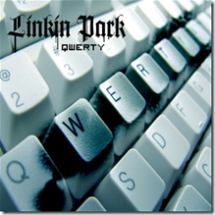

16 août 2006
Linkin Park au Summer Sonic 2006 !

Linkin Park à joué une nouvelle musique appellé "QWERTY". On retrouve tout les morceaux des albums de Linkin Park mais aussi "Reading my eyes" de Xero (Le groupe avant la création de Linkin Park)
On retrouve tout les morceaux des albums de Linkin Park mais aussi "Reading my eyes" de Xero (Le groupe avant la création de Linkin Park)
Commentaires 3